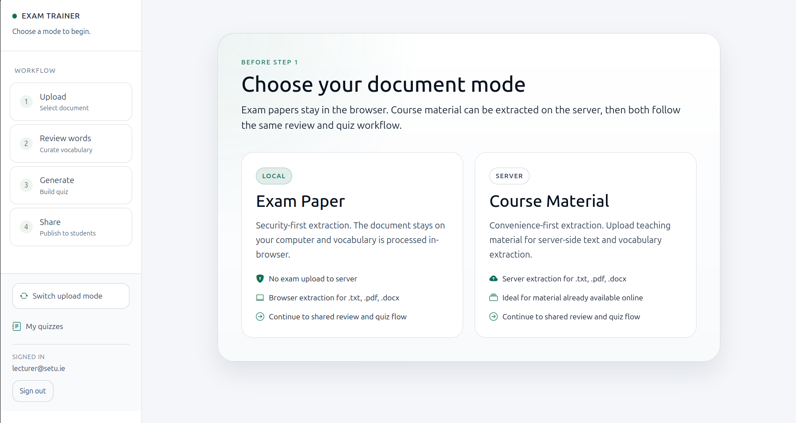
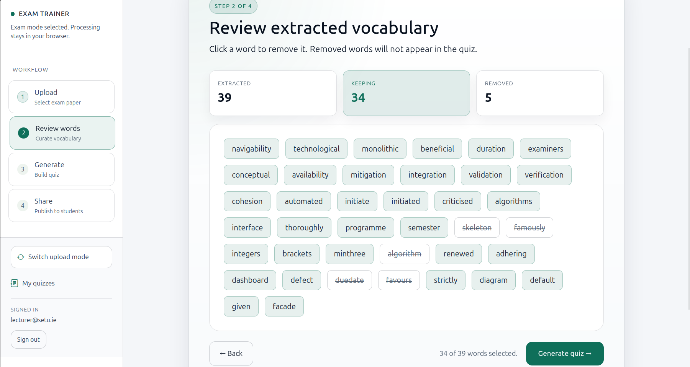
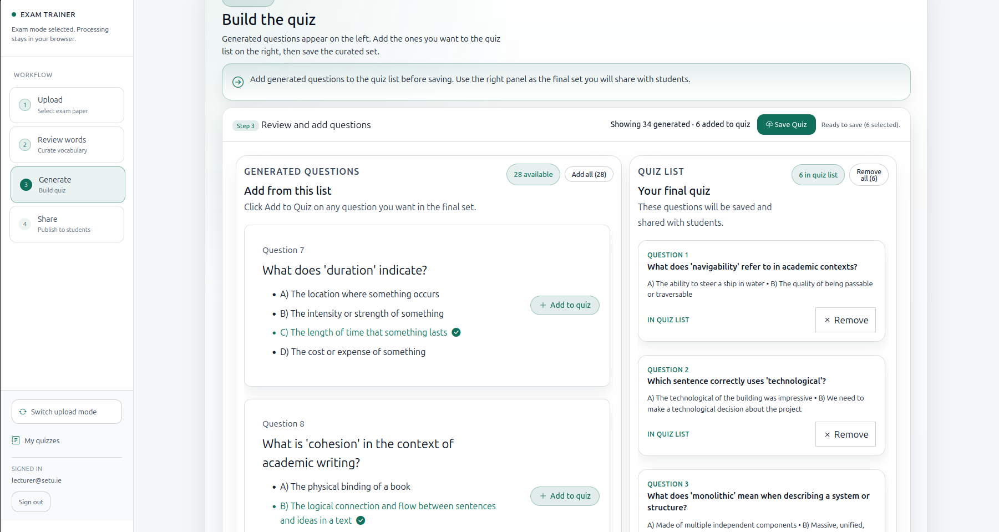
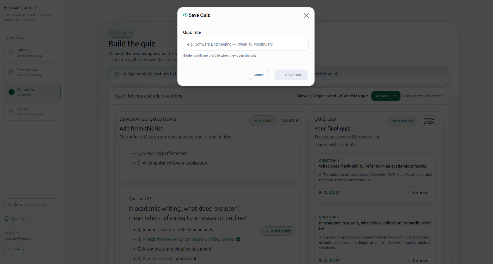
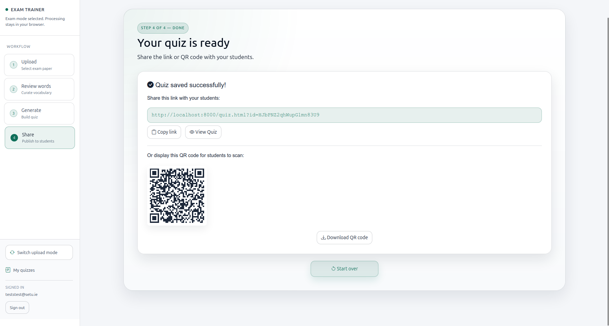

Mode Selector
Choose secure local extraction for exam papers or server extraction for course material.
App Overview
Exam Language Trainer helps lecturers support students studying in a non-native language by extracting difficult vocabulary from exam material and turning it into a curated multiple-choice quiz. The workflow is designed to protect exam integrity: in exam mode, document processing stays in the lecturer's browser and only approved quiz questions are shared with students.
Screenshots

Choose secure local extraction for exam papers or server extraction for course material.

Review extracted vocabulary and remove words before quiz generation.

Curate generated questions and finalize the exact set students will see.
How To Use — Lecturers
Open the lecturer tool and sign in with your lecturer account.
Select Exam Paper (local) or Course Material (server) mode.
Upload your .txt, .pdf, or .docx file and run extraction.
Keep difficult words that matter and remove anything unsuitable.
Generate questions from curated words, then keep only the best questions in the final quiz list.

Enter a quiz title and save the curated quiz set.

Share the generated link or QR code with your students.
How To Use — Students
Open the quiz link shared by your lecturer.
Complete the vocabulary quiz on any browser-enabled device.
Review your score and feedback immediately after submission.
FAQs
In Exam Paper mode, no. The document is processed in your browser and stays local. In Course Material mode, uploaded course files are processed server-side by design.
No. Students open the shared quiz link directly and can complete the quiz without registering.
The tool supports .txt, .pdf, and .docx files.
A typical quiz includes around 25 questions selected from a curated pool of about 30 target words.
Yes. Students can reopen the shared link and retake the quiz when needed.
No. After saving, the quiz is fixed. To make changes, generate and save a new quiz version.
Contact / Support
For support, feedback, or project discussion, use the contact details below.